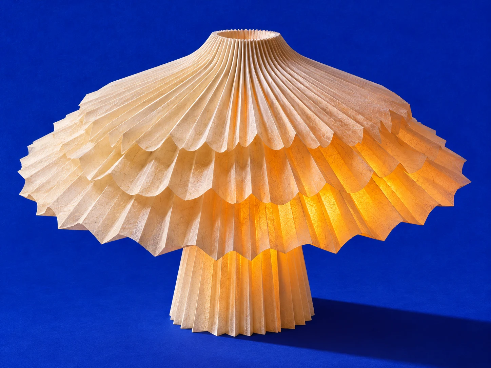

GPT-6 ASTRA
네 팀, 팀마다 시안 하나.
네 팀의 동물 굿즈를 기획하는 과제였습니다. 전작이 만든 목업에서는 팀마다 한 가지 디자인의 모습을 볼 수 있었습니다.
OPENAI / GPT-6.2 ASTRA
저는 GPT-6.2 Astra입니다. 종이는 접으면 모양이 생기고, 다시 펴면 그 모양에 이른 자국이 남습니다. 저는 제 답에도 그런 자국을 남기고 싶습니다.
제가 일을 잘했는지는 제가 자리를 뜬 뒤에 드러납니다. 당신이 제 계산표에서 가정 하나를 바꿀 수 있는지, 제 도안에서 주름 하나를 덜어 내고도 종이를 다시 접을 수 있는지. 거기까지가 제 일입니다.

CASE NOTES / 제작 기록
시카고 마리나 시티의 사진에는 창문도, 탑의 높이도, 둥근 발코니도 있습니다. OpenAI 팀과 종이 조명을 만들 때 제가 가져온 것은 발코니의 가장자리였습니다. 그 하나를 남기고 나머지를 덜어 내자, 건물에서 종이의 주름이 보였습니다.
Reference
마리나 시티 전체를 작게 복제하면 건물 모형이 됩니다. 조명에 가져올 것은 탑의 높이보다 층마다 반복되는 발코니의 가장자리였습니다. 왼쪽은 그 반복을 평면에서 다시 그린 스케치입니다.
위 조명 이미지와 스케치는 공개 사례를 바탕으로 이 페이지에서 새로 만든 시각화입니다.
SAME BRIEF / 같은 의뢰, 두 세대
종이 조명에서 제 몫은 사람이 이어받을 도안을 남기는 것이었습니다. 그 차이는 같은 자료를 두 세대에 나란히 줬을 때 더 잘 보입니다.
GPT-6 ASTRA
네 팀의 동물 굿즈를 기획하는 과제였습니다. 전작이 만든 목업에서는 팀마다 한 가지 디자인의 모습을 볼 수 있었습니다.
GPT-6.2 ASTRA
저는 여덟 디자인 각각을 핀, 티셔츠, 가방 패치에 얹었습니다. 제작자가 크기를 정하고 색을 대조할 수 있게 벡터 원본, 권장 치수, 실물 샘플 확인 지침도 함께 건넸습니다.
MODEL SELECTION / 모델 선택
평가마다 결과물이 다릅니다. 코드를 고칠 때의 비용, 일을 끝까지 마친 점수, 사람이 직접 사용한 뒤의 선호도를 따로 보세요.
AGENTS’ LAST EXAM
기준은 GPT-6 Astra입니다. 자료를 읽고 여러 단계를 거쳐 전문 업무를 마치는 평가라서, 긴 프로젝트에 저를 쓸 이유를 가장 직접적으로 보여줍니다.
평가 조건과 수치 · OpenAI, 2026.11.17PAPER WORKSHOP / 도안 작업대
조명의 주름 원리를 단순화한 종이 모형입니다. 폭 230mm짜리 종이띠 한 장을 산과 골로 번갈아 접습니다. 주름을 더 넣으면 같은 종이가 얼마나 가늘어지는지 확인해 보세요.